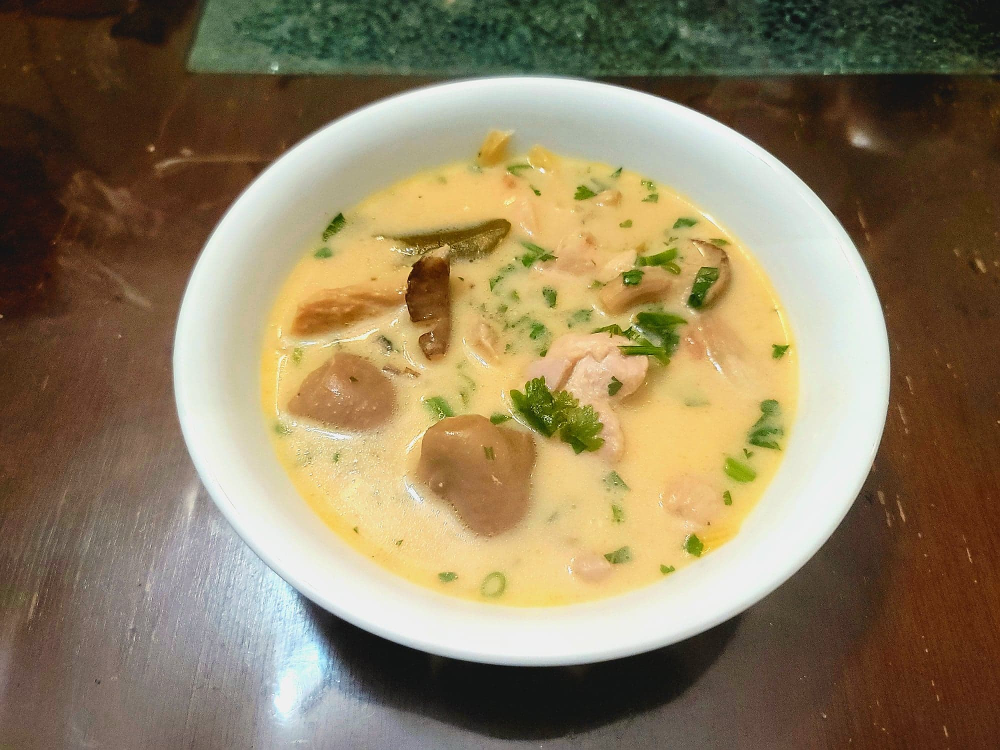

Tom Kha Gai

Ingredients:
- 1 lb Chicken thighs, cubed
- 2 Lemongrass, cut into 2 inch pieces and then pounded
- 2 oz Galangal, chopped and pounded
- 4 Shallots, chopped
- 2 cups Chicken broth
- 1 15oz can Coconut milk
- 1 large Tomato, cut into 8-10 wedges
- 2 tsp Palm sugar
- 2 tbsp Fish sauce
- 1/2 lb Oyster mushrooms, Beech mushrooms, or button mushrooms, sliced
- 3 Kaffir lime leaves, pounded
- 1-3 Red thai chilies, pounded
- 2 Scallions, chopped
- 1/4 - 1/2 bunch Cilantro, chopped
- 1/4 - 1/3 cup Lime juice (about 2-3 Limes)
Instructions:
- Place the broth, lemongrass, galangal, and shallots into a medium sized pot. Bring to a boil and then reduce to medium heat.
- Add in the coconut milk, tomato, sugar, fish sauce, mushrooms, lime leaves, and chilies. Stir to combine and let come back to a simmer. Simmer over medium heat for 10 minutes stirring occasionally or until the chicken is completely cooked.
- Remove from heat and stir in the scallions, cilantro, and lime juice. Serve immediately.